3 Data visualisation
library(tidyverse)3.1 Introduction
“The simple graph has brought more information to the data analyst’s mind than any other device” – John Tukey
This chapter teaches data visualization using ggplot2.
3.1.1 Exercise
No exercise.
3.2 First steps
3.2.1 Exercise
Q1. Run ggplot(data = mpg). What do you see?
ggplot(data = mpg)
Ans1. A blank plot. We have not mapped anything to aesthetics.
Q2. How many rows in mpg? How many columns?
Ans2. Running dim(mpg) gives 234 rows and 11 columns. Alternatively one can also run nrow(mpg) to obtain number of rows and ncol(mpg) to obtain the columns. Futher, one can also use str(mpg). The first line conatins the required information.
dim(mpg)## [1] 234 11Q3. What does drv variable describe? Read the help for ?mpg to find out.
Ans3. The drv describes how the cars drives i.e. by front two wheels, the rear wheels or all four wheels.
| f | r | 4 |
|---|---|---|
| front-wheel drive | rear wheel drive | 4wd |
Q4. Make a scatter plot for hwy vs cyl.
Ans4.
ggplot(mpg, mapping = aes( x = hwy, y = cyl)) + geom_point()Q5. What happens if you make a scatterplot of class vs drv? Why is the plot not useful?
Ans5.
ggplot(mpg, mapping = aes( x = class, y = drv)) + geom_point() The plot is not useful because of overploting. For example there are many cars of compact class but from the plot it seems as if there are only two cars.
3.3 Aesthetic mapping
An aesthetic is a visual property of the objects in the plot. It include things like the color, the shape, or the size of the points. We can convey the information about the data by mapping the aesthetics in the plot to the variables in the dataset. For example, colors of the points can be mapped to the class variable to show the class of each car.
3.3.1 Exercise
Q1. What’s wrong with this code? Why are the points not blue?
ggplot(data = mpg) +
geom_point(mapping = aes(x = displ, y = hwy, color = "blue"))Ans1. In order for points to be colored the blue argumnet color should be outside the aes layer like shown below:
ggplot(data = mpg) +
geom_point(mapping = aes(x = displ, y = hwy), color = "blue")Q2. Which variable in mpg are categorical?Which are continuous?(Hint: type ?mpg to read the documentation for the dataset). How can you see this information when you run mpg)?
Ans2. We can use either ?mpgand read from the help page or can run str(mpg) to find out about the type of variables in the mpg dataset.
str(mpg)## Classes 'tbl_df', 'tbl' and 'data.frame': 234 obs. of 11 variables:
## $ manufacturer: chr "audi" "audi" "audi" "audi" ...
## $ model : chr "a4" "a4" "a4" "a4" ...
## $ displ : num 1.8 1.8 2 2 2.8 2.8 3.1 1.8 1.8 2 ...
## $ year : int 1999 1999 2008 2008 1999 1999 2008 1999 1999 2008 ...
## $ cyl : int 4 4 4 4 6 6 6 4 4 4 ...
## $ trans : chr "auto(l5)" "manual(m5)" "manual(m6)" "auto(av)" ...
## $ drv : chr "f" "f" "f" "f" ...
## $ cty : int 18 21 20 21 16 18 18 18 16 20 ...
## $ hwy : int 29 29 31 30 26 26 27 26 25 28 ...
## $ fl : chr "p" "p" "p" "p" ...
## $ class : chr "compact" "compact" "compact" "compact" ...Q3. Map a continuous variable to color, size and shape. How do these aesthetics behave differently for categorical vs. continuous variables?
Ans3.
- Mapping color to continuous variable.
When mapping a continuous variable to color,for example cty is mapped to color, a color gradient is displayed to represent the values of the continuous variable. By defalut ggplot creates a color gradient from light blue to dark blue.
ggplot(mpg, aes(x = displ, y = cty, color = cty)) + geom_point()- Mapping size to continuous variable.
ggplot(mpg, aes(x = displ, y = cty, size = cty)) + geom_point()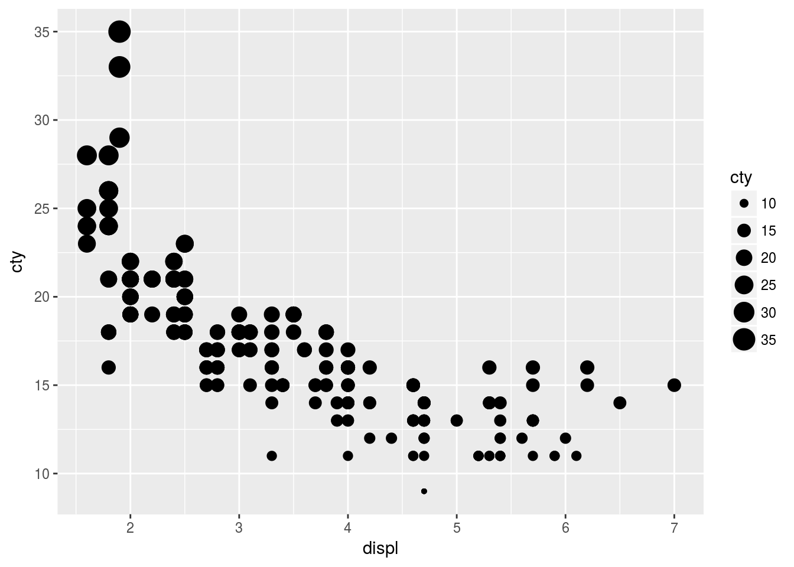
- Mapping shape to continuous variable.
ggplot(mpg, aes(x = displ, y = cty, shape = cty)) + geom_point()## Error: A continuous variable can not be mapped to shapeMapping a shape to continuous variable does not make sense. The continuous variable have a natural order but shapes have no natural order for example we cannot say a rectangle is greater or less than a triangle.
- Mapping color to a categorical variable
ggplot(mpg, aes(x = displ, y = cty, color = class)) + geom_point()Q4. What happens if you map the same variable to multiple aesthetics?
Ans4. It is possible to map the same variable to multiple aesthetics provided the mapping is allowed for the aesthetic. However, mapping the same variable adds redundant information and should be avoided. For example drv variable is mapped to the color and shape aesthetic in the plot below.
ggplot(mpg, aes(x = displ, y = hwy, color = drv, shape = drv)) + geom_point()Q5. What does the stroke aesthetic do?What shapes does it work with?(Hint: use ?geom_point)
Ans5. The stroke aesthetic is used to change the border for shapes 21-25 which is given as property to geom_points(). The size and color of the border can be altered with the stroke and color. For example
ggplot(mpg, aes(x = displ, y = hwy)) + geom_point(shape = 21, fill = "yellow", size = 3, stroke = 3, color = "black")Q6. What happens if you map an aesthetic to something other than the variable name, like aes(color = displ <5) ?
Ans6. This will divide the data in two parts and create a temporary boolean variable indicating TRUE if the observations satisfy the condition FALSE otherwise. For example
ggplot(mpg, aes(x = displ, y = cty, color = displ<5 )) + geom_point()3.4 Common Problems
While creating plots using ggplot it is mandatory to put + at the end and not at the start of the statements. For example
ggplot(data = mpg) +
geom_point(mapping = aes(x = drv, y = cyl))3.4.1 Exercise
No exercise.
3.5 Facets
Facets are used to split the plots based on variables particularly useful for categorical variables. facet_warp is used to split the plot using single variable and facet_grid is used to split the plot using a combination of variables.
3.5.1 Exercise
Q1. What happens if you facet on a continuous variable?
Ans1. The facet will convert the continuous variable into factors and we get as many plots as factors. For example
ggplot(mpg, aes(x = displ, y = cty, color = drv)) + geom_point() + facet_wrap(~cyl)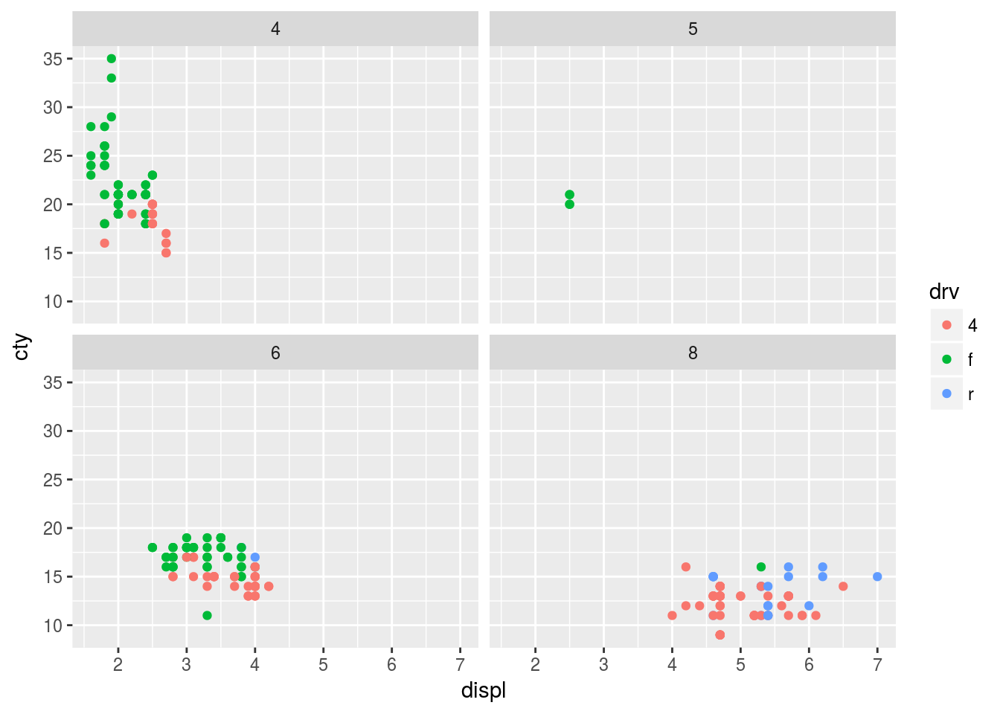
Q2. What do the empty cells in plot with facet_grid(drv ~ cyl) mean?How do they relate to this plot?
Ans2.
ggplot(mpg, aes(x = displ, y = cty)) +
geom_point() +
facet_grid(drv ~ cyl)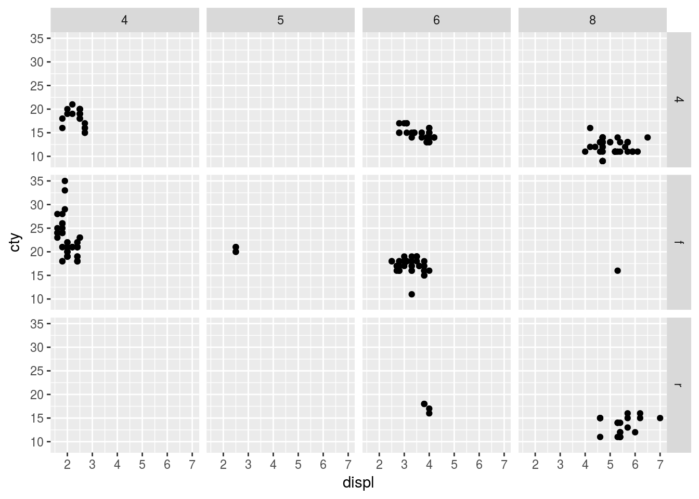
The empty grids in the facet_grid(drv ~ cyl) represents the fact that there are no observations for a particular combination of drv and cyl.
Q3. What plot does the following code make? What does . do ?
Ans3. The general formula in the facet_grid plots is facet_grid(ROWS ~ COLUMNS). A . means to ignore the faceting in that dimension.
ggplot(data = mpg) +
geom_point(mapping = aes(x = displ, y = hwy)) +
facet_grid(drv ~ .)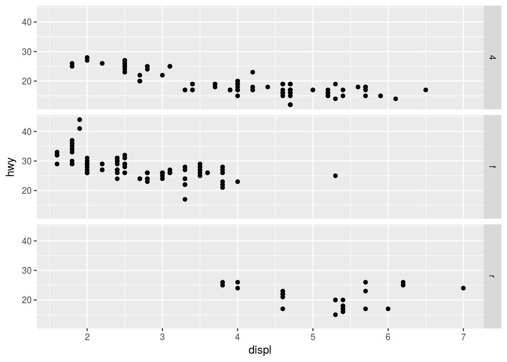
The first plot compares displ vs hwy and rows are facetted by drv while there is no facetting by columns.
ggplot(data = mpg) +
geom_point(mapping = aes(x = displ, y = hwy)) +
facet_grid(. ~ cyl)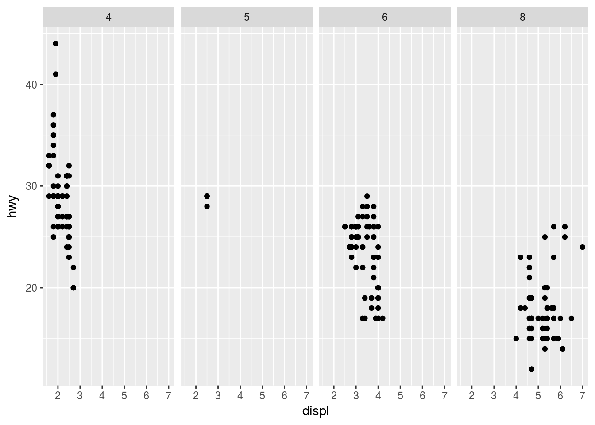
The second plot compares displ vs hwy and columns are facetted by cyl while there is no facetting by rows.
Q4. Take the first faceted plot in this section:
ggplot(data = mpg) +
geom_point(mapping = aes(x = displ, y = hwy)) +
facet_wrap(~ class, nrow = 2)What are the advantages to using faceting instead of the colour aesthetic? What are the disadvantages? How might the balance change if you had a larger dataset?
Ans4. The advantage of faceting is clear when there are many groups in a large dataset. As the number of unique groups rise it becomes increasingly confusing to distinguish groups using different colors in the same plot.
The same plot when the class is represented by color aesthetic rather than faceting.
ggplot(data = mpg) +
geom_point(mapping = aes(x = displ, y = hwy, col = class))A possible disadvantage of faceting is that since the observations are divided into separate plots a direct comparision may be difficult. Therefore, it may be worth showing each group with a different color in the same plot if the dataset is smaller and there are small numbet of groups to compare.
Q5. Read ?facet_wrap. What does nrow do? What does ncol do? What other options control the layout of the individual panels? Why doesn’t facet_grid() have nrow and ncol arguments?
Ans5. nrow and ncol refer to number of rows and columns of the panel in a facet_wrap plot. It is useful to specify number of rows or columns because facet_wrap facets using only one variable. For example
Facet with 1 row
ggplot(data = mpg) +
geom_point(mapping = aes(x = displ, y = hwy)) +
facet_wrap(~ class, nrow = 1)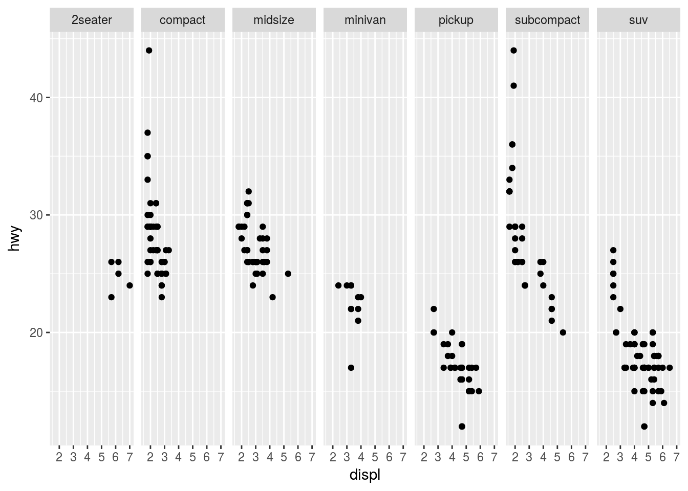
Facet with two rows
ggplot(data = mpg) +
geom_point(mapping = aes(x = displ, y = hwy)) +
facet_wrap(~ class, nrow = 2)
These arguments are unnecessary in facet_grid because the number of rows and columns are automatically calculated from the unique values of the variables specified in the facet_grid(ROWS ~ COLUMNS) command.
Q6. When using facet_grid() you should usually put the variable with more unique levels in the columns. Why?
Ans6. It is advised to put variables with more unique levels in columns in a landscape mode because it is much easier visually to see the trend in a dependent variable y by scanning horizontally. For example
More unique levels in rows
ggplot(data = mpg) +
geom_point(mapping = aes(x = displ, y = hwy)) +
facet_grid(class ~ drv)More unique values in columns
ggplot(data = mpg) +
geom_point(mapping = aes(x = displ, y = hwy)) +
facet_grid(drv ~ class)3.6 Geometric object
A geom is the geometric object that a plot uses to display the data. For example a line chart uses line geoms and bar chart uses a bar geoms and so on to display the data.
3.6.1 Exercise
Q1. What geom would you use to draw a line chart? A boxplot? A histogram? An area chart?
Ans1.
- line chart:
geom_line() - boxplot:
geom_boxplot() - histogram:
geom_hist() - area chart:
geom_area()
Q2. Run this code in your head and predict what the output will look like. Then, run the code in R and check your predictions.
ggplot(data = mpg, mapping = aes(x = displ, y = hwy, color = drv)) +
geom_point() +
geom_smooth(se = FALSE)## `geom_smooth()` using method = 'loess'The above code will produce a scatterplot between displ and hwy. The points will be colored by drv and there will be a smooth line without standard errors for each group of drv. It is worth noticing that the mapping is defined in ggplot() therefore, it passes to geom_point() and geom_smooth().
ggplot(data = mpg, mapping = aes(x = displ, y = hwy, color = drv)) +
geom_point() +
geom_smooth(se = FALSE)## `geom_smooth()` using method = 'loess'
Q3. What does show.legend = FALSE do? What happens if you remove it? Why do you think I used it earlier in the chapter?
Ans3. show.legend = FALSE will hide the legend. For example
ggplot(data = mpg, mapping = aes(x = displ, y = hwy, color = drv)) +
geom_point(show.legend = FALSE)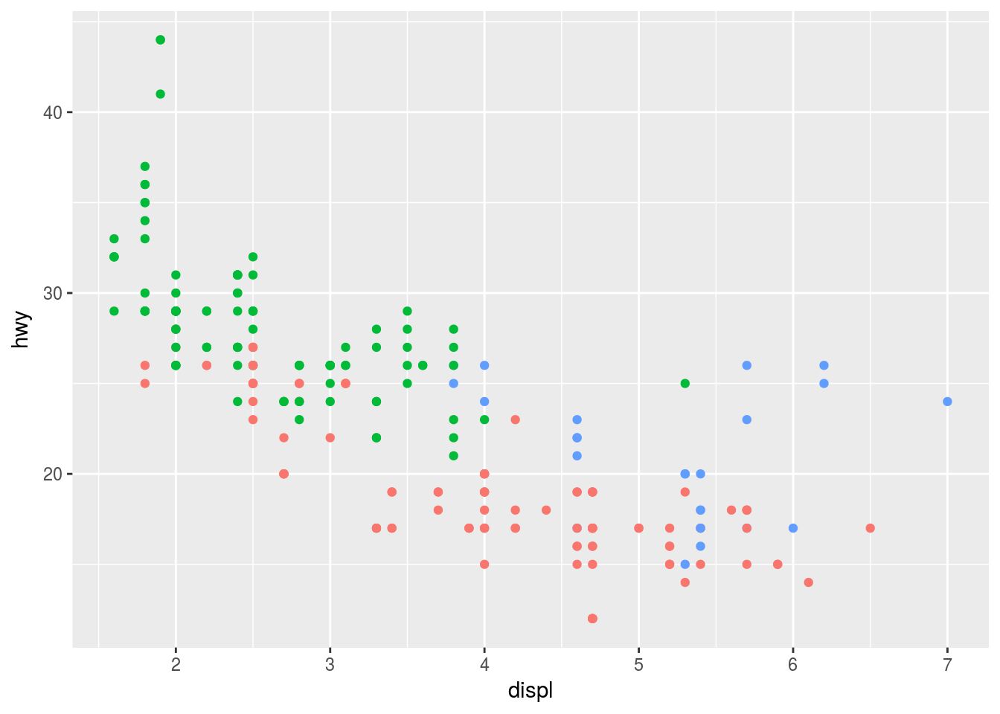
If we remove it the legend is displayed which is automatically created when a variable is mapped to aesthetics like size, shape or color. The last part of the question refers to the following code
ggplot(data = mpg) +
geom_smooth(mapping = aes(x = displ, y = hwy))## `geom_smooth()` using method = 'loess'ggplot(data = mpg) +
geom_smooth(mapping = aes(x = displ, y = hwy, group = drv))## `geom_smooth()` using method = 'loess'ggplot(data = mpg) +
geom_smooth(
mapping = aes(x = displ, y = hwy, colour = drv),
show.legend = FALSE)## `geom_smooth()` using method = 'loess'In the above code legend was suppressed in the last plot because the context of the code was to show the difference between mapping a variable to group (which does not add legend by itself) and color (which add legends) aesthetic.
Q4. What does the se argument to geom_smooth do?
Ans4. se argument is used to display se = TRUE or hide se = FALSE the standard error bands to the line. se is TRUE by default. For example
se = TRUE
ggplot(data = mpg, mapping = aes(x = displ, y = hwy, colour = drv)) +
geom_point() +
geom_smooth(se = TRUE)## `geom_smooth()` using method = 'loess'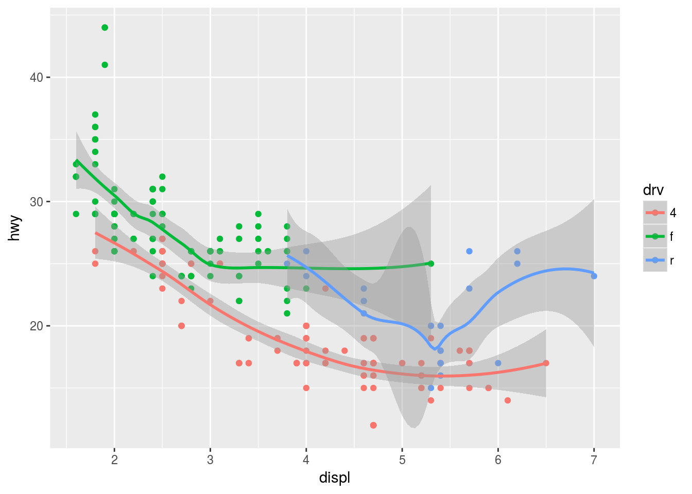
se = FALSE
ggplot(data = mpg, mapping = aes(x = displ, y = hwy, colour = drv)) +
geom_point() +
geom_smooth(se = FALSE)## `geom_smooth()` using method = 'loess'
Q5. Will these two graphs look different? Why/why not?
ggplot(data = mpg, mapping = aes(x = displ, y = hwy)) +
geom_point() +
geom_smooth()## `geom_smooth()` using method = 'loess'ggplot() +
geom_point(data = mpg, mapping = aes(x = displ, y = hwy)) +
geom_smooth(data = mpg, mapping = aes(x = displ, y = hwy))## `geom_smooth()` using method = 'loess'Ans5. No, because in the second plot both geom_point() and geom_smooth() take same data and mappings as defined in ggplot in the first plot. Infact geom objects can inherit those values from ggplot object, therefore, it is unnecessary to be specified again.
Q6. Recreate the R code necessary to generate the following graphs.
Ans6.
Plot 1
ggplot(mpg, aes(x = displ, y = hwy)) +
geom_point() +
geom_smooth(se = FALSE)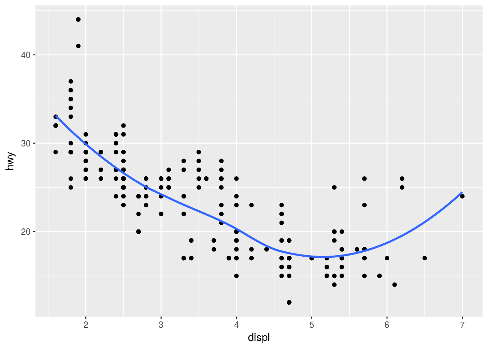
Plot 2
ggplot(mpg, aes(x = displ, y = hwy, group = drv)) +
geom_point() +
geom_smooth(se = FALSE)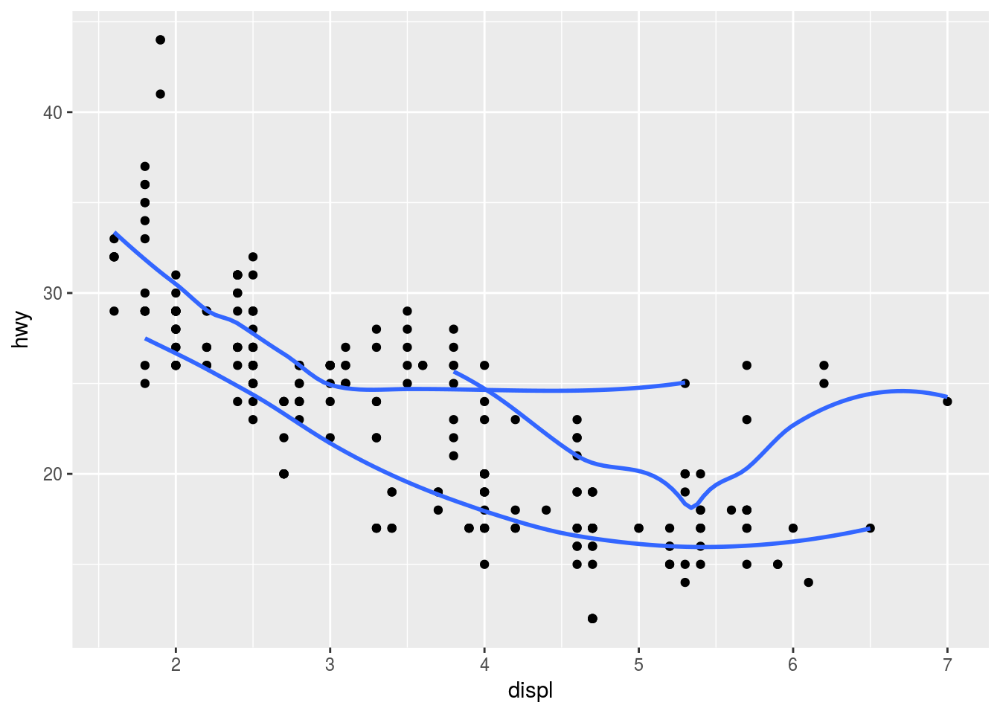
Plot 3
ggplot(mpg, aes(x = displ, y = hwy, color = drv)) +
geom_point() +
geom_smooth(se = FALSE)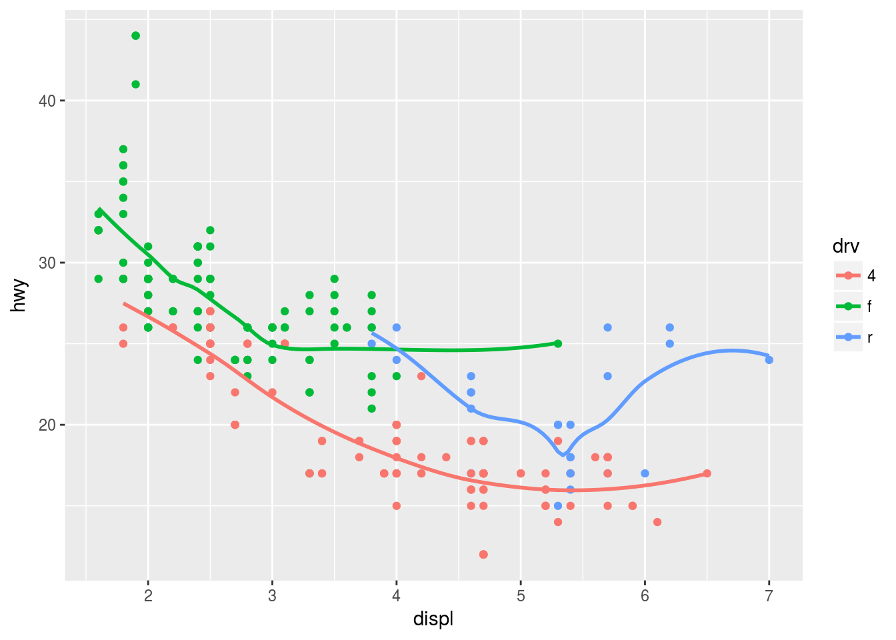
Plot 4
ggplot(mpg, aes(x = displ, y = hwy)) +
geom_point(aes(color = drv)) +
geom_smooth(se = FALSE)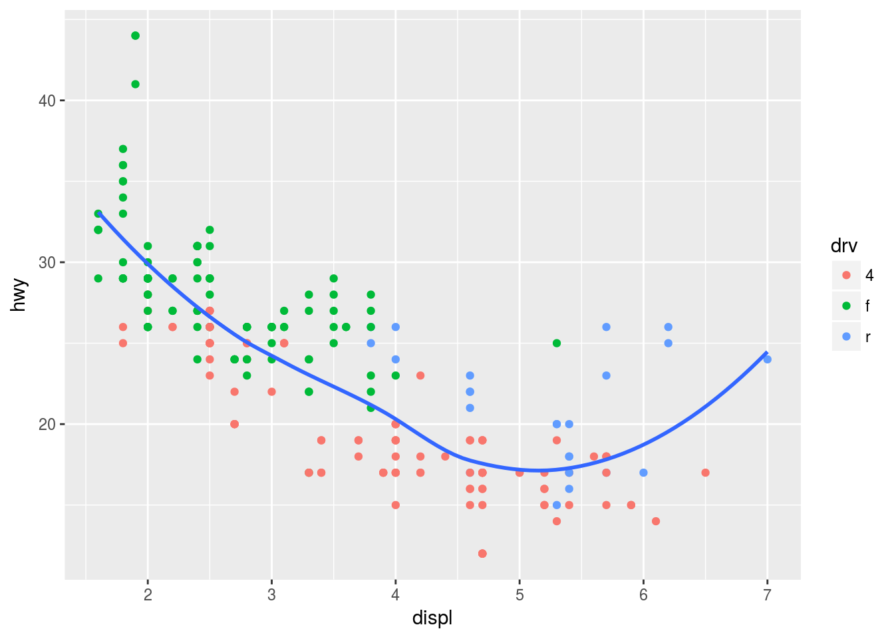
Plot 5
ggplot(mpg, aes(x = displ, y = hwy)) +
geom_point(aes(color = drv)) +
geom_smooth(se = FALSE, aes(linetype = drv))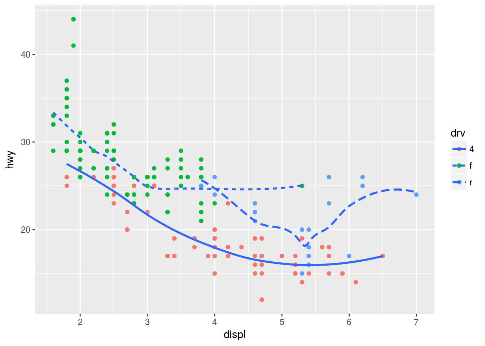
Plot 6
ggplot(mpg, aes(x = displ, y = hwy)) +
geom_point(color = "white", size = 4) +
geom_point(aes(color = drv))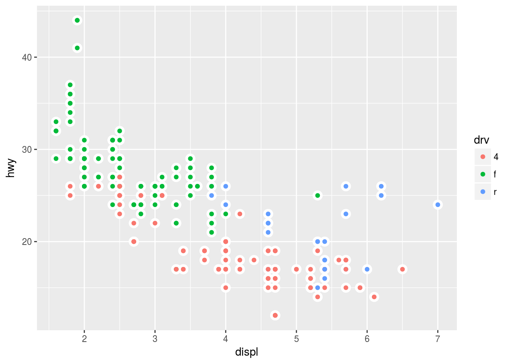
3.7 Statistical transformations
Some graphs like bar charts, boxplots uses an algorithim to calculate new values to generate a plot. The algorithim used is called stat (statistical transformations). For example bar charts, histograms or frequency polygons bin the data and then plot the count of the points that fall in each bin. The counts are originally not necessarily present in the original data.
3.7.1 Exercise
Q1. What is the default geom associated with stat_summary()?. How could you rewrite the previous plot to use that geom function instead of the stat function?
Ans1. The default geom assocaited with stat_summary is geom_pointrange. See ?stat_summary. The default stat in geom_pointrange is “identity” therefore, using “summary” and change the min, max and midpoint to produce the same plot.
ggplot(diamonds, aes(x = cut, y = depth)) +
geom_pointrange(stat = "summary",
fun.ymin = min,
fun.ymax = max,
fun.y = median
)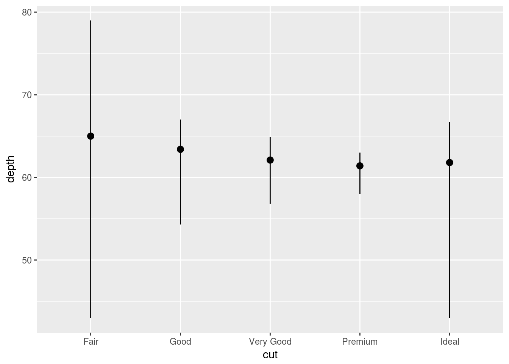
Q2. What does geom_col() do? How it is different to geom_bar()?
Ans2. The geom_col() and geom_bar() are used to make bar charts. The difference being geom_col() uses stat_identity as the default stat whereas geom_bar() uses stat_count as the default stat. In other words geom_col() expects that the data is preprocessed into x and y values and plots the data as it is whereas geom_bar() will create either of two variables(count or prop) and then plots the count data on the y axis.
Q3. Most geoms and stats come in pairs that are almost always used in concert. Read through the documentation and make a list of all the pairs. What do they have in common?
Ans3. Please look at the documentation
Q4. What variables does stat_smooth() compute? What parameters control its behaviour?
Ans4. The function stat_smooth() calculates the following statistics: * y - predicted value * ymin - lower value of the confidence interval * ymax - upper value of the confidence interval * se - standard error
Based on ?stat_smooth the statistics can be controlled with the method argument. There can be different methods like lm, glm, loess among others which determines the type of method used to calculate the predictions and confidence interval.
Q5. In our proportion bar chart, we need to set group = 1. Why? In other words what is the problem with these two graphs?
ggplot(data = diamonds) +
geom_bar(mapping = aes(x = cut, y = ..prop..))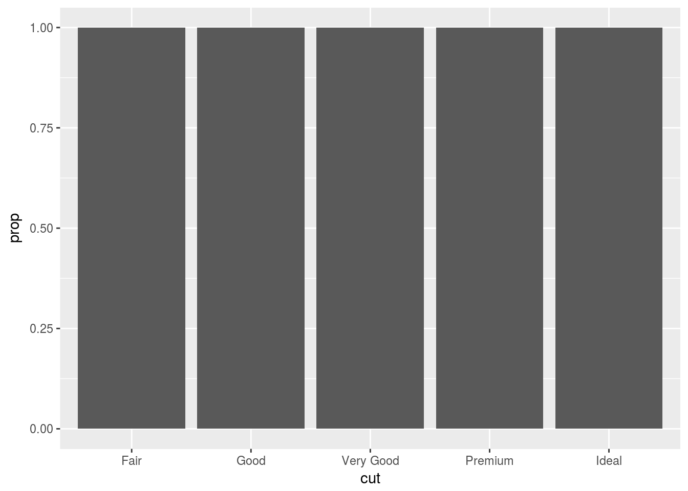
ggplot(data = diamonds) +
geom_bar(mapping = aes(x = cut, fill = color, y = ..prop..))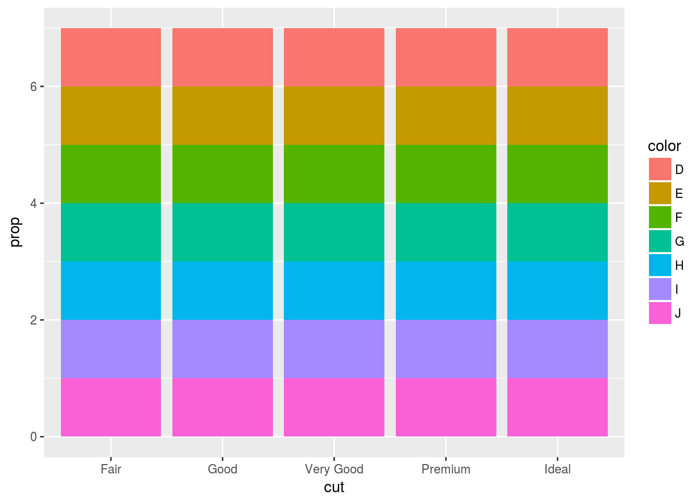
Ans5. If the group is not set to 1, then all the bars have proportion == 1. By default geom_bar() treats number of x values as individual group and stat computes the count within each group therefore, we get prop == 1 for each value of x in the above graphs.
Following is the version we mostly likely intended
ggplot(data = diamonds) +
geom_bar(mapping = aes(x = cut, y = ..prop.., group = 1))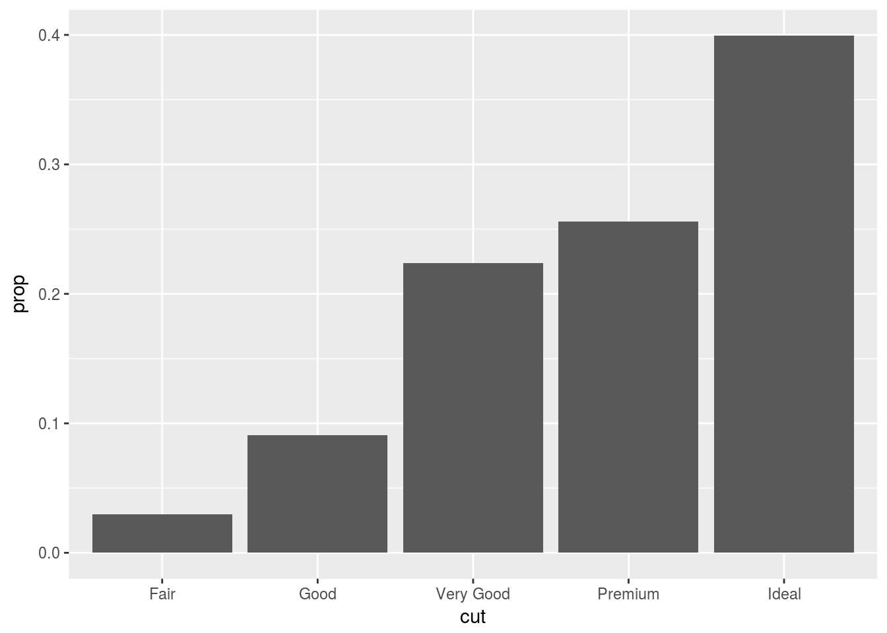
ggplot(data = diamonds) +
geom_bar(mapping = aes(x = cut, fill = color, y = ..prop.., group = color))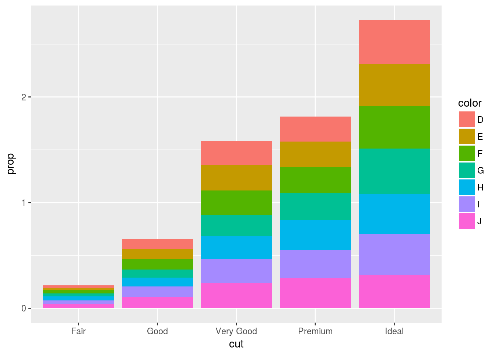
3.8 Position adjustments
The stacking is performed using the position argument. For no stacking use position = "idendity", "dodge" or "fill". postion = "jitter" adds small amount of random noise and is useful for scatter plots in avoiding overploting.
3.8.1 Exercise
Q1. What is the problem with this plot? How could you improve it?
ggplot(data = mpg, mapping = aes(x = cty, y = hwy)) +
geom_point()
Ans1. Overplotting is the problem. This can be improved using position="jitter" argument or geom_jitter()
ggplot(data = mpg, mapping = aes(x = cty, y = hwy)) +
geom_point(postion = "jitter")## Warning: Ignoring unknown parameters: postion
OR
ggplot(data = mpg, mapping = aes(x = cty, y = hwy)) +
geom_jitter()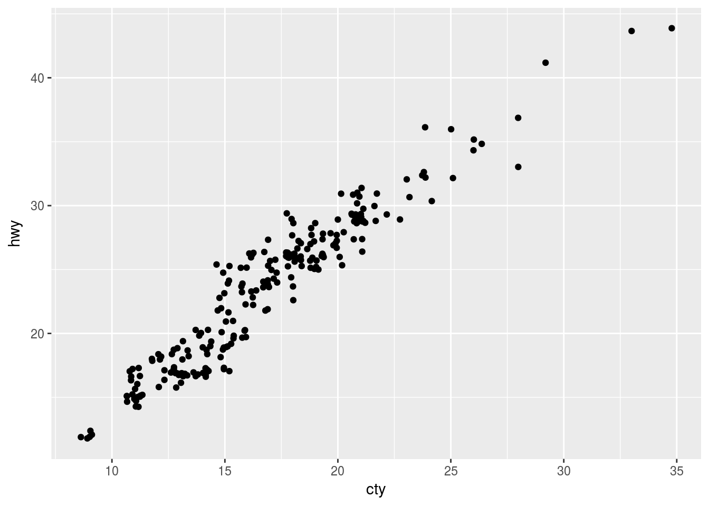
Q2. What parameters to geom_jitter() control the amount of jittering?
Ans2. There are two parameters that control the amount of jitter * width - horizontal displacement * height - vertical displacement
Plot with no jitter
ggplot(data = mpg, mapping = aes(x = cty, y = hwy)) +
geom_point()
Plot with width = 0, no horizontal displacement
ggplot(data = mpg, mapping = aes(x = cty, y = hwy)) +
geom_jitter(width = 0, height = 1)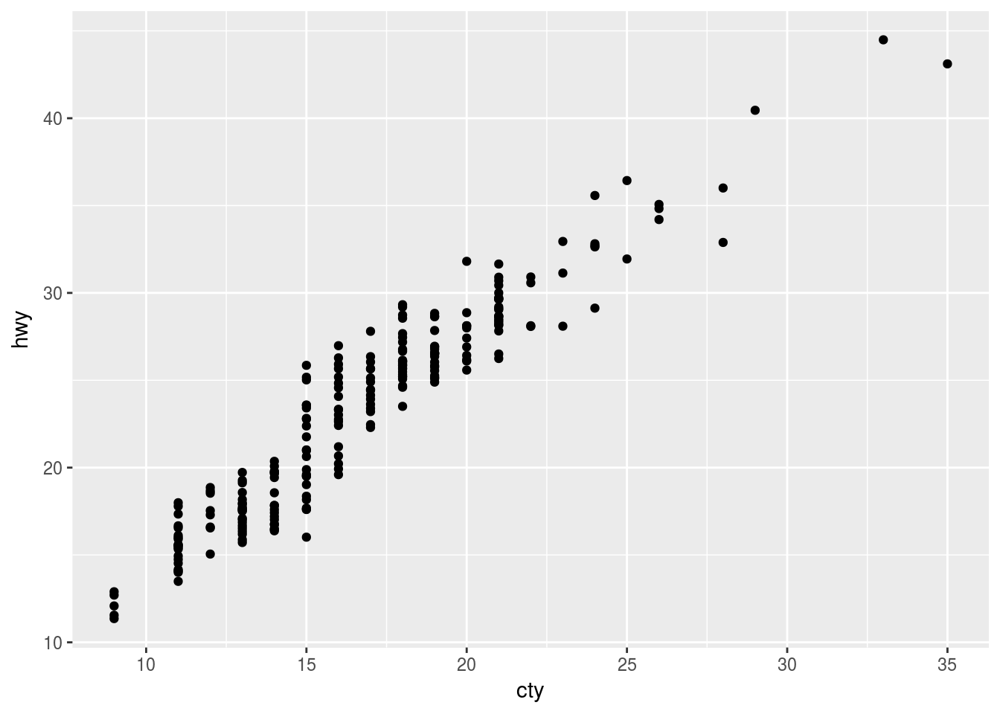
Plot with height = 0, no vertical displacement
ggplot(data = mpg, mapping = aes(x = cty, y = hwy)) +
geom_jitter(width = 1, height = 0)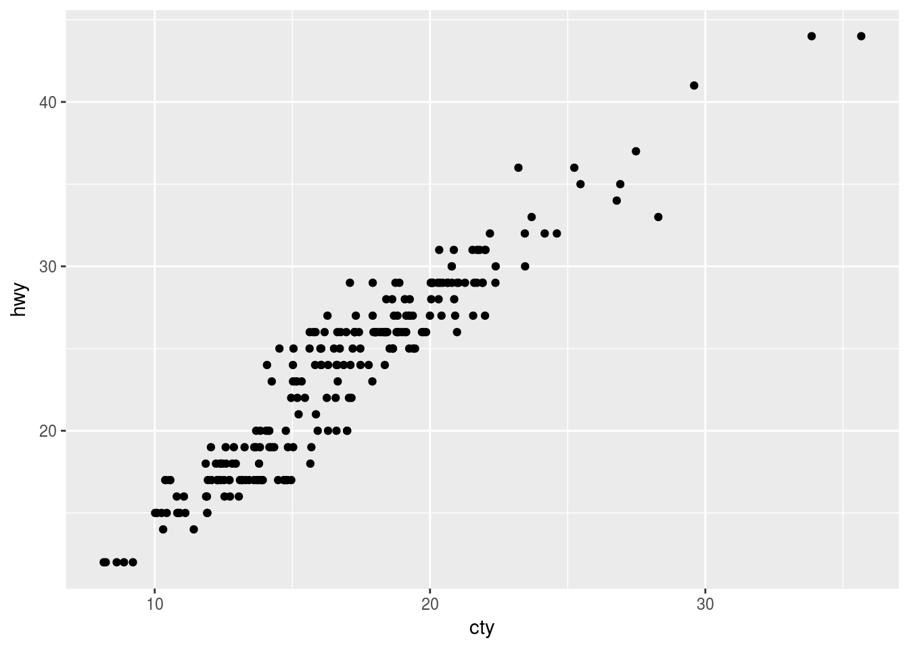
Plot with horizontal and vertical displacement
ggplot(data = mpg, mapping = aes(x = cty, y = hwy)) +
geom_jitter(width = 1, height = 1)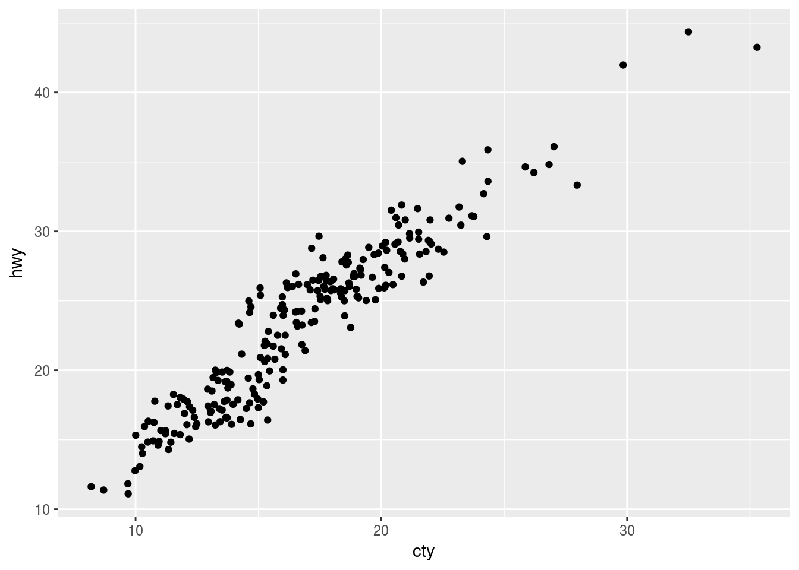
Q3. Compare and contrast geom_jitter() with geom_count().
Ans3. geom_jitter() adds the random noise in the plot. It reduces the overplotting however, at the cost of altering the actual x and y values of the points. For example:
ggplot(data = mpg, mapping = aes(x = cty, y = hwy)) +
geom_jitter()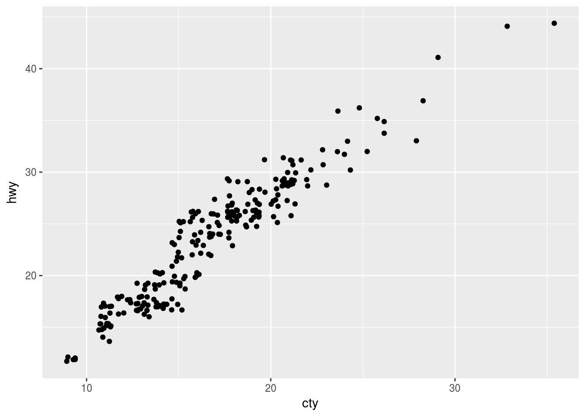
geom_count() controls the size the points based on the frequency of observations at each location. In other words points with more observations will be larger than with fewer observations. This does not change the actual x and y values however, is prone to overplotting if the points are large and close to each other.For example:
ggplot(data = mpg, mapping = aes(x = cty, y = hwy)) +
geom_count()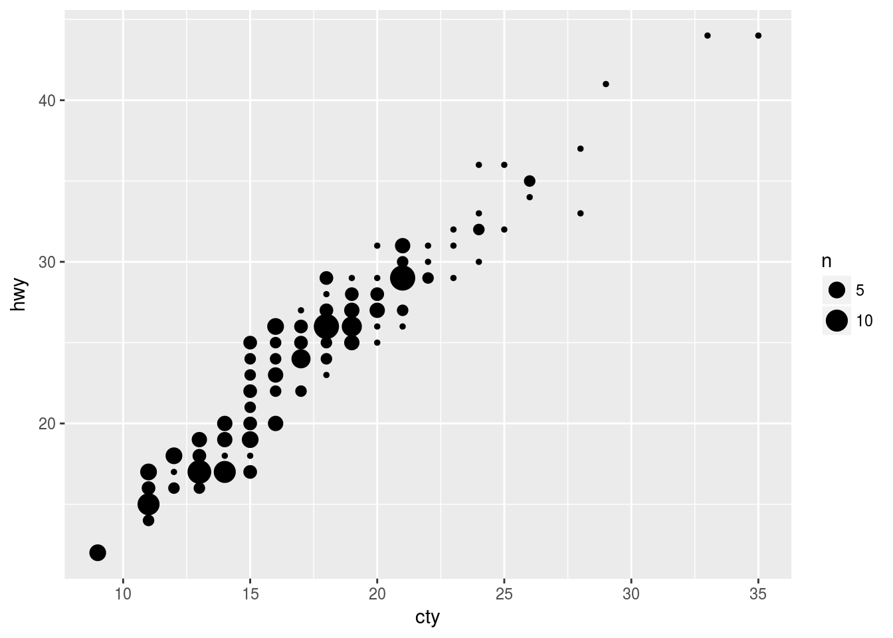
Q4. What’s the default position adjustment for geom_boxplot()? Create a visualizaion of the mpg dataset that demonstrates it.
Ans4. As per the documentation the default position for geom_boxplot() is "dodge".
ggplot(data = mpg, mapping = aes(x = drv, y = cty, colour = manufacturer)) +
geom_boxplot()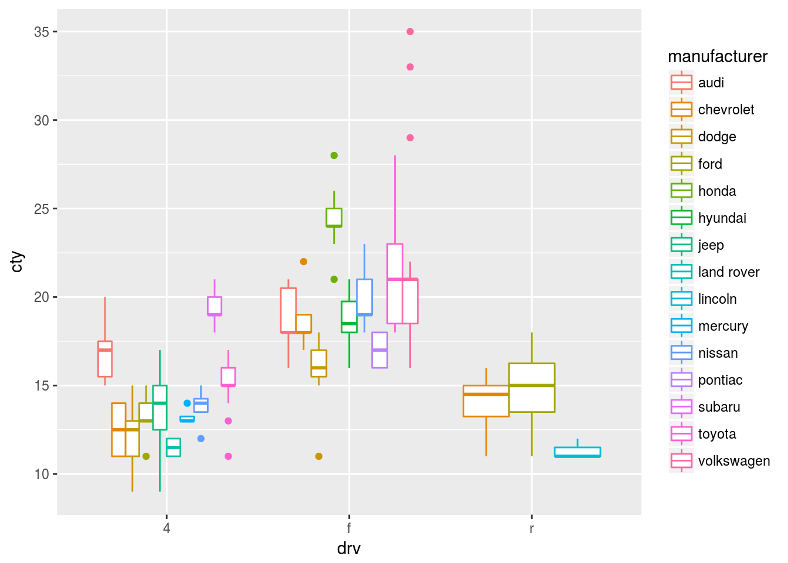
3.9 Coordinate systems
3.9.1 Exercise
Q1. Turn a stacked bar chart into a pie chart using coord_polar().
Ans1. Stacked bar chart
ggplot(data = mpg, mapping = aes(x = factor(1), fill = class)) +
geom_bar()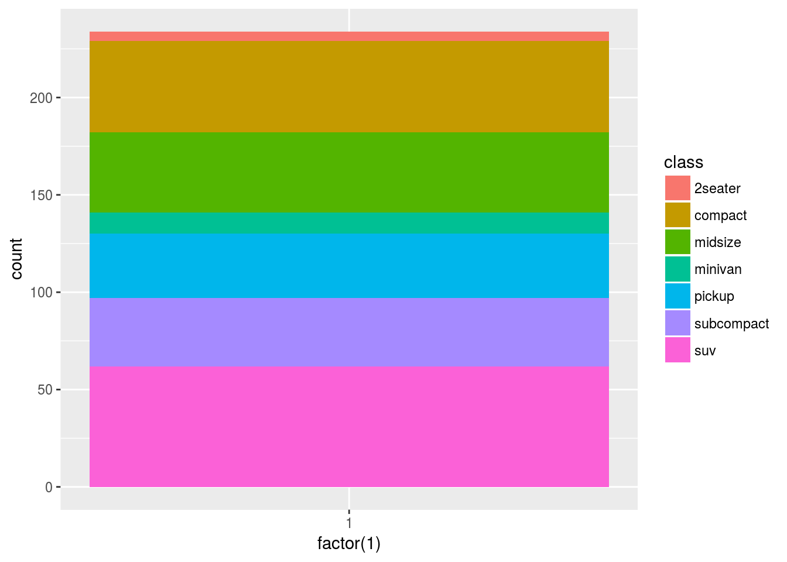
and the corresponding pie chart is shown below. Please see documentation for explanation of the argument theta.
ggplot(data = mpg, mapping = aes(x = factor(1), fill = class)) +
geom_bar(width = 1) +
coord_polar(theta = "y")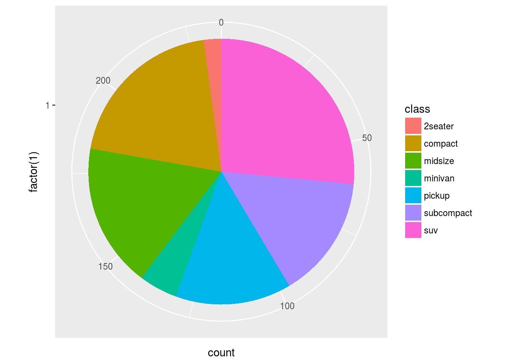
Q2. What does labs() do? Read the documentation.
Ans2. It is used for modifying labels and plot legends. For example:
ggplot(data = mpg, mapping = aes(x = manufacturer, y = cty )) + geom_boxplot() + coord_flip() + labs(y = "City MPG", x = "", title = "City MPG by manufacturer")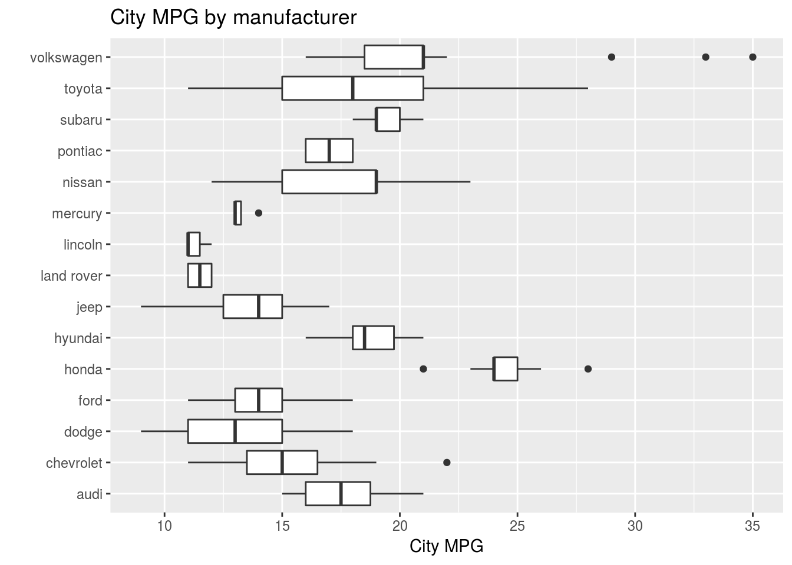
Q3. What is the difference between coord_quickmap() and coord_map()?
Ans3. From the documentation of coord_map it is coord_quickmap is a quick approximation of the coord_map algorithim to project a portion of earth, which is spherical, onto a flat 2D plane using a projection called “mercator” defined in mapproj package.
library("maps")##
## Attaching package: 'maps'## The following object is masked from 'package:purrr':
##
## mapnz <- map_data("nz")
nzmap <- ggplot(nz, mapping = aes(x = long, y = lat, group = group)) +
geom_polygon(color = "black", fill = "white")
nzmap + coord_map()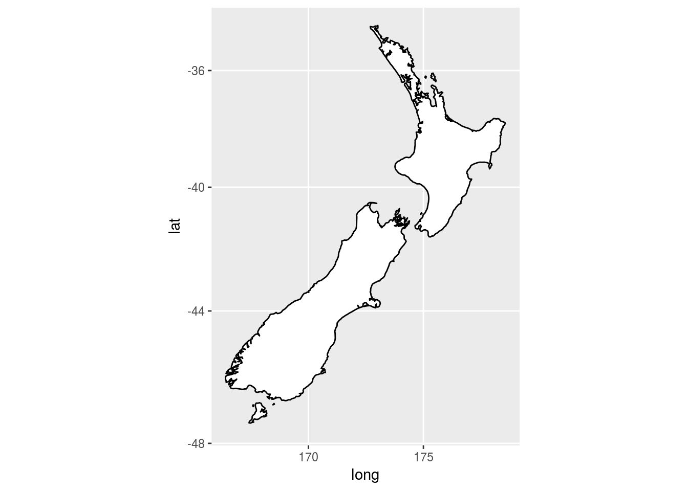
nzmap + coord_quickmap()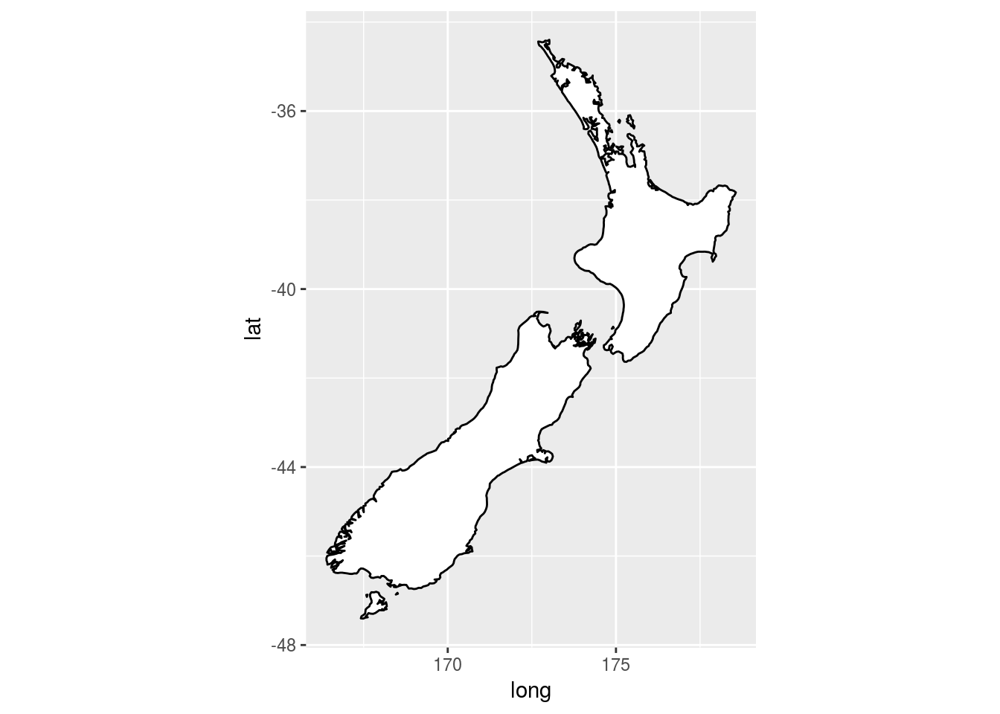
Q4. What does the plot below tell you about the relationship between city and highway mpg? Why is coord_fixed() important? What does geom_abline() do?
ggplot(data = mpg, mapping = aes(x = cty, y = hwy)) +
geom_point() +
geom_abline() +
coord_fixed()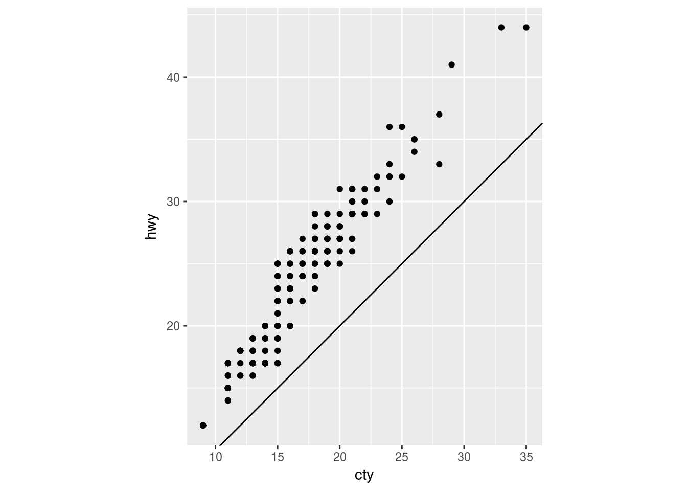
Ans4. The plot tells us that hwy mpg is always higher than city mpg and there is a strong positive correlation. coord_fixed is important because > A fixed scale coordinate system forces a specified ratio between the physical representation of data units on the axes. – Documentation of coord_fixed()
The default ratio = 1. Ratio greater than 1 make unit on the y axis longer than the units on the x axis. For example:
- ratio > 1
ggplot(data = mpg, mapping = aes(x = cty, y = hwy)) +
geom_point() +
geom_abline() +
coord_fixed(ratio = 2)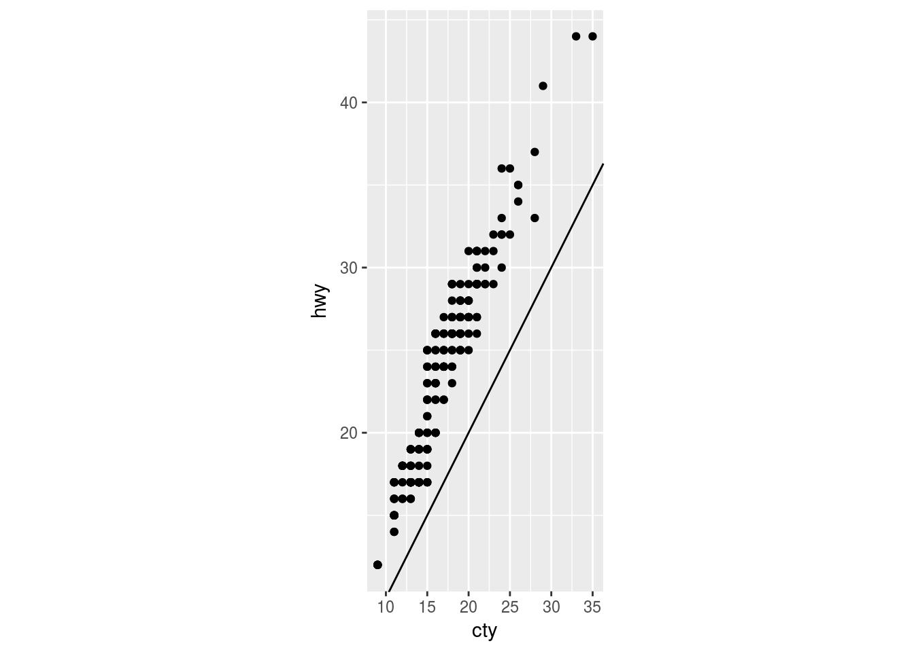
- ratio < 1
ggplot(data = mpg, mapping = aes(x = cty, y = hwy)) +
geom_point() +
geom_abline() +
coord_fixed(ratio = 0.5)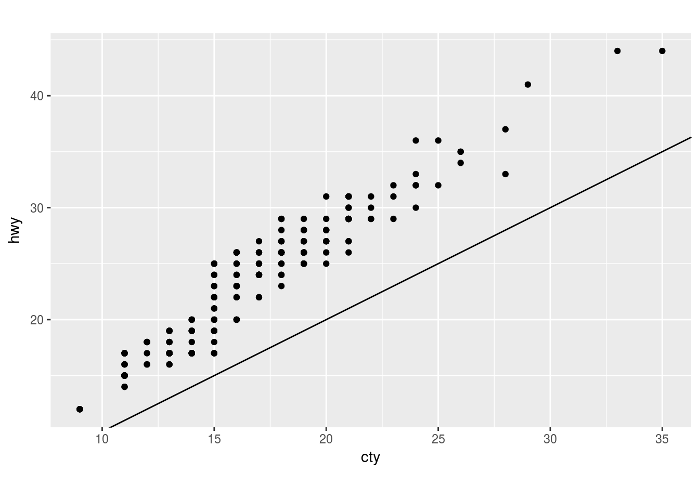
Finally geom_abline() adds reference lines also called rules to the plot either horizontal, vertical or diagonal(using slope and intercept arguments). The default values are slope=1 and intercept=0. If any point fall on reference line it indicates that highway and city mpg are same for that point. For example both the codes produce the same plot:
ggplot(data = mpg, mapping = aes(x = cty, y = hwy)) +
geom_point() +
geom_abline() +
coord_fixed() +
expand_limits(x = 0, y = 0)
ggplot(data = mpg, mapping = aes(x = cty, y = hwy)) +
geom_point() +
geom_abline(slope = 1, intercept = 0) +
coord_fixed() +
expand_limits(x = 0, y = 0)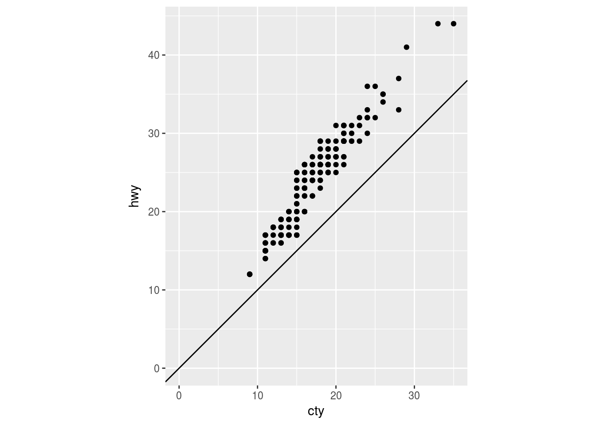
3.10 The layered grammer of graphics
The grammer of graphics is based on the insight that you can uniquely describe any plot as a combination of dataset, a geom, a set of mappings, a stat, a position adjustments, a coordinate system and a faceting scheme. – R for Data Science
3.10.1 Exercise
No exercise.